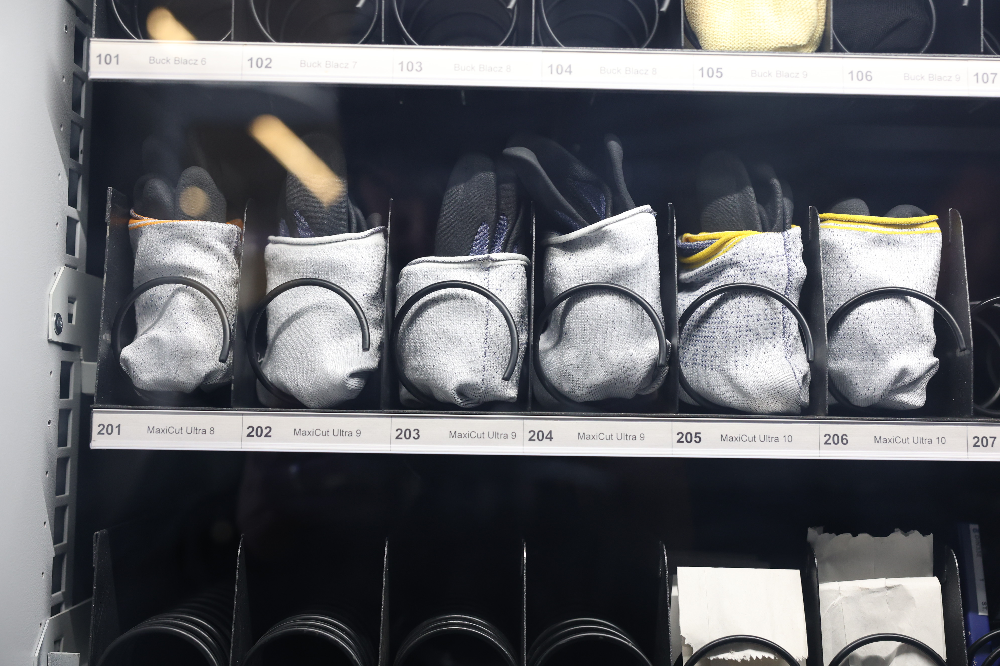
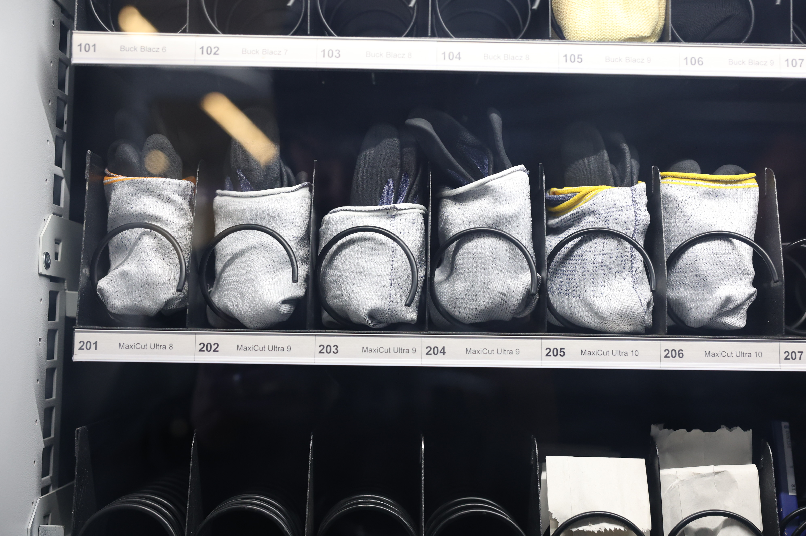

Spiralautomat mit Rücknahmeeinheit
Sichere, automatisierte Materialausgabe rund um die Uhr. Ideal für PSA & Produktionsmittel, mit flexiblen Tabletts und intelligenter Bedienung. Maximale Kontrolle durch Identifikation, Berichtssystem & unterbrechungsfreien Betrieb.
Der Spiralautomat ist das vielseitige Allround‑Talent für eine moderne, sichere und effiziente Materialversorgung. Ob Arbeitsschutzartikel, Verbrauchsmaterialien oder Produktionsmittel – dieses System sorgt dafür, dass wichtige Artikel rund um die Uhr zuverlässig verfügbar sind. Mit intelligenter Technik, hoher Flexibilität und maximaler Bedienfreundlichkeit bringt der Spiralautomat Ordnung, Transparenz und Kontrolle in Ihre Betriebsabläufe.
- 24/7 sichere Materialausgabe
- Flexible Bestückung mit bis zu 7 Tabletts
- Intuitive Bedienung via Touchscreen & Identifikation
- Zuverlässig & ausfallsicher dank Notstromversorgung
- Transparente Daten durch Export & Berichtsystem


 


Kapazität & Aufbau
- Bis zu 7 Tabletts für vielfältige Artikelkategorien
- Interne Ablagefächer: max. 7 Stück
- Tablettgrösse: 742 × 595 mm
- Belastbarkeit pro Tablett: 60 kg, Gesamtbelastbarkeit: 420 kg
- Abmessungen: B 1160 mm × T 1000 mm × H 1800 mm
- Leergewicht: 280 kg
Bedienung & Benutzerfreundlichkeit
- Touchscreen mit benutzerfreundlicher, mehrsprachiger Oberfläche
- Identifikationssystem: Karte oder Strichcode
- Anzeige des Firmenlogos auf dem Display
- Optionale farbige Eckelemente für Corporate Design
Sicherheit & Schutz
- Automatisiertes horizontales Sicherheitstor über der Ladeöffnung
- Elektromechanischer Verschluss
- Wartungstür mit einzigartigem Sicherheitsschloss
Stromversorgung & Betriebssicherheit
- Zusatzaggregat für unterbrechungsfreien Betrieb – Bestandsdaten bleiben selbst bei Stromschwankungen erhalten
- Versorgung: 230 V / 50 Hz, 6 A, 24 VDC Steuerstrom
Daten & Auswertung
- Einzelabrufe & Datenexport
- Entwickeltes Berichtsystem für volle Transparenz über Verbrauch und Zugriffe